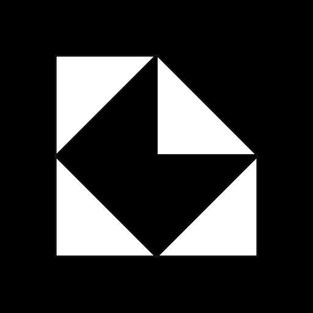
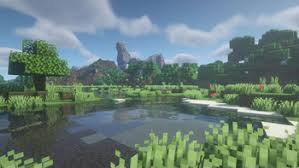

Web Development
Websites, PWAs, digital archives, internal tools, dashboards, data-driven interfaces, and custom web systems.
IAF develops technology across intelligent systems, digital products, web development, computing infrastructure, and experimental engineering.
Indonesia Advance Future is a technology and engineering initiative focused on building useful digital and intelligent systems.
From websites and software platforms to AI infrastructure and physical computing, IAF approaches each project as part of a larger technological ecosystem.

Advanced artificial intelligence entities designed to operate across digital and physical environments.

A digital education archive built around structured content, media, and accessible web infrastructure.

A community Minecraft server operated by IAF, combining game infrastructure, networking, and automation.
Websites, PWAs, digital archives, internal tools, dashboards, data-driven interfaces, and custom web systems.
AI research and development focused on persistent systems, autonomous behavior, intelligent interfaces, and machine learning.
Software products designed around real workflows, structured data, automation, and scalable digital infrastructure.
Embedded systems, physical computing, servers, networking, automation, and experimental technology projects.
Not everything IAF builds is visible from the front end. We operate servers, networks, computing infrastructure, hosted services, and experimental systems that keep projects running in the background.
INFRASTRUCTURE IS A LAYER / NOT THE PRODUCT
Indonesia Advance Future develops technology with a focus on intelligent systems, infrastructure, and practical digital products.
IAF is headquartered in Jakarta and operates technology infrastructure including data-center systems in Aceh.
The goal is simple: build technology that can become infrastructure for the future.